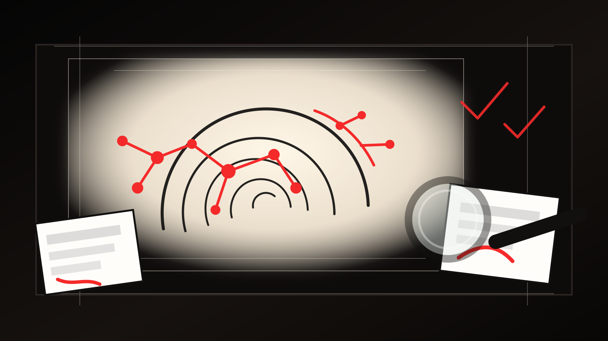

промпты
Работаете в обычном чате или проекте: снимаете голос, собираете карту источника, чистите AI-тон, делаете несколько форматов.
Сначала источник и задача. Затем голос, черновик, проверка, формат и обновление правил. Так AI становится ассистентом редакции, а не генератором случайного текста.
Работаете в обычном чате или проекте: снимаете голос, собираете карту источника, чистите AI-тон, делаете несколько форматов.
Работаете в папке проекта: агент видит материалы, держит этапы, сохраняет решения и помогает не пропустить проверку.
Для каждой передачи, рубрики или формата появляется свой граф: примеры, запреты, тон, структура, правки.
что такое хороший текст, где появляется AI-тон, как чистить и проверять
Сергей показывает путь без агентов и путь со Стайл графом
разбираем ваши сценарии, форматы, ограничения и домашнее задание
общие усилителиважный, уникальный, новый уровень, большой потенциал
искусственная глубина«это не X, это Y», «дело не в X, дело в Y»
рубленая драматизациякороткие фразы подряд без смысловой необходимости
псевдоразговорность«и знаете что?», «вот что я понял», «хочу поделиться»
ровная симметрияодинаковые абзацы, списки ради списков, слишком чистая структура
К середине 2025 примерно 35% новых сайтов классифицированы как AI-generated или AI-assisted.
arXiv, 2026В 2026-исследовании участники не смогли надежно отличить LLM-новости от человеческих.
arXiv, 2026Свежие работы показывают высокий риск ошибок и ложных срабатываний при автоматическом распознавании.
NBER, 2025Вывод для редакции: проверяем источник, точность, голос и риск, а не пытаемся угадывать происхождение.

Препринт оценивает: к середине 2025 около трети новых сайтов были AI-generated или AI-assisted.
arXiv: The Impact of AI-Generated Text on the InternetВ исследовании новостей участники не отличали машинные тексты от человеческих надежнее статистического шума.
Can Humans Tell? LLM-Generated News, 2026Практическая проблема детекторов: ложные отрицания для AI-текстов и ложные обвинения человеческих текстов.
NBER: Artificial Writing and Automated Detection, 2025Imperva оценивает автоматизированный трафик 2025 года как больше половины всего веб-трафика.
Imperva Bad Bot Report, 2026заменить общие слова фактом, местом, героем, числом
важный / значимый / новый уровеньне делать событие больше, чем оно есть в источнике
без драматизацииубрать одинаковые абзацы и ровные списки
живой ритмпоказывать мысль через источник
факт / цитата / сценаотметить, что нельзя выпускать без проверки
ответственный выпускНа выезде. Наговорили факты, впечатления, цитаты, вопросы. К приезду есть черновик структуры.
В дороге. Голосом собрали мысль, AI разложил ее на карту источника и вопросы.
На прогулке. Идея не теряется: она попадает в черновик, который потом можно править как текст.
Где работать: обычный чат, проект, Claude Co-work, агрегатор моделей.
Что важно: сохранять карту источника, карточку стиля, удачные правки и финальные версии.
Ограничение: контекст приходится переносить вручную в новые чаты и проекты.
передача, рубрика, канал, аудитория, задача текста
Voice DNA или Reverse Prompt по 3-5 сильным примерам
факты, цитаты, пробелы, риски, что нельзя утверждать
De-AI-fy, Humanize, проверка воды и искусственного ритма
Telegram, сайт, анонс, заголовки, проверка перед выпуском
материалы проекта, примеры текстов, источники, черновики
передача или рубрика, аудитория, задача, канал, ограничения
тон голоса, редакционные знания, удачные и слабые примеры
что редакция знает о себе и что граф извлек из текстов
что теперь использовать, что запретить, что проверять человеком
Сегодня фиксируем актуальный подход на 15 мая 2026 года: карта источника, стиль, форматы, проверка и обновление правил. На финальном занятии отдельно вернемся к тому, что изменится за месяц.
Base. В обычном чате: Reverse Prompt, карта источника, De-AI-fy, Humanize, два формата текста.
Normal. В агенте: папка проекта, TV Style Graph, один источник, пакет форматов, проверка перед выпуском.
Advanced. Добавить Dramaturgical Text, Format Factory или отдельный форматный скилл для своей передачи.
Сначала карта источника. Затем голос конкретного продукта, черновик, чистка, формат, гейт и обновление Стайл графа. Финальное решение всегда остается за редактором.